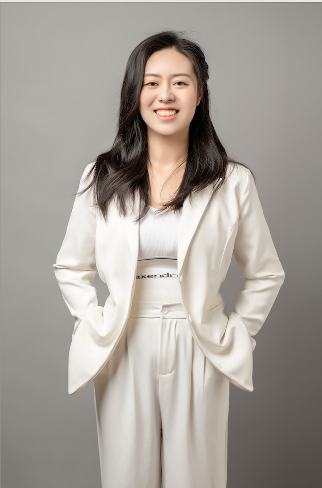

正念入企师资

杨泽云
正念入企师资
清华大学心理学博士，注册系统心理师，国家二级心理咨询师。MIED（情绪困扰正念干预）认证师资及督导师，多篇论文发表于国内外期刊。
郭欣然
正念入企师资
北大心理与认知科学学院硕士（应用心理学临床方向）。注册心理师，MIED认证师资，1500+小时咨询经验，2000+小时危机干预热线经验。

黄阳
正念入企师资
清华大学应用心理学硕士，MIED（情绪困扰正念干预）认证师资，持续接受系统式咨询训练，专注正念与职场心理健康融合。
边然
正念入企师资
北大心理与认知科学学院硕士（应用心理学临床方向）+ 北外英语系硕博。前海淀六小强高中英语老师，MIED认证师资，融合心理学科研与教学实践。
彭婷
正念入企师资
北大应用心理硕士，大厂金牌讲师与项目负责人。历任线下分校校长、网校校长。MIED认证师资，"聆听心"正念中心发起人，擅将科学心理学与正念训练结合。
刘晨馨
正念入企师资
北大应用心理硕士（老年心理学方向），"聆听心"正念中心发起人，专注正念干预在组织健康与个体发展中的应用与推广。
← 左右滑动查看更多 →